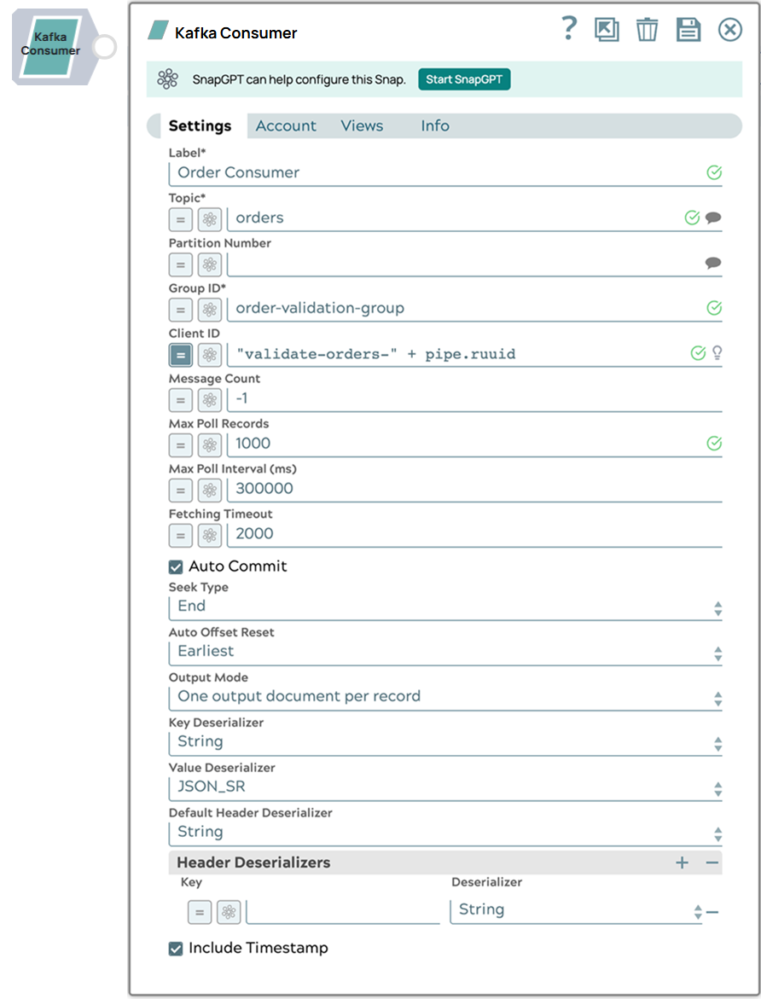

Kafka Consumer
 Note:
Note:
- We recommend that you do not combine consumer groups and partitions when configuring the Kafka Consumer.
- For the notifications to work properly, a record output by the Consumer Snap must be acknowledged by the Kafka Acknowledge executing on the same node.

- Read-type Snap
-
 Works in Ultra Tasks
Works in Ultra Tasks
Prerequisites
- A valid account with the required permissions.
- A Kafka topic with parameters that are valid for consumption (reading).
Snap views
| Type | Description | Examples of upstream and downstream Snaps |
|---|---|---|
| Input |
A document containing a Kafka topic, a consumer group, a partition, and an offset. |
|
| Output |
The message data with key/value parameters and metadata. |
|
| Learn more about Error handling. | ||
Snap settings
Legend:
- Expression icon (
 ): Allows using
pipeline parameters to set field values dynamically (if enabled). SnapLogic Expressions
are not supported. If disabled, you can provide a static value.
): Allows using
pipeline parameters to set field values dynamically (if enabled). SnapLogic Expressions
are not supported. If disabled, you can provide a static value. - SnapGPT (
 ): Generates SnapLogic Expressions
based on natural language using SnapGPT. Learn
more.
): Generates SnapLogic Expressions
based on natural language using SnapGPT. Learn
more. - Suggestion icon (
 ): Populates a
list of values dynamically based on your Snap configuration. You can select only one
attribute at a time using the icon. Type into the field if it supports a comma-separated
list of values.
): Populates a
list of values dynamically based on your Snap configuration. You can select only one
attribute at a time using the icon. Type into the field if it supports a comma-separated
list of values. - Upload
 : Uploads files. Learn more.
: Uploads files. Learn more.
| Field/Field set | Type | Description |
|---|---|---|
Label
|
String |
Required. Specify a unique name for the Snap. Modify this to be more appropriate, especially if more than one of the same Snaps is in the pipeline. Default value: Kafka Consumer Example: Consumer_sales_data |
| Topic | String/Suggestion | Specify the topic from which messages are to be read. Default value: N/A Example: T1 |
| Partition Number | Integer/Expression | Specify the partition number. Partitions allow you to
parallelize a topic by splitting the data in a particular topic
across multiple brokers. They allow multiple consumers to read from
a topic in parallel. Note: This field is optional unless Seek
type is set to Specify offset, in which case it
is required. A value that is equal to or greater than the total
number of partitions for the topic is allowed so that when a
target partition is added to the topic, the Snap is ready to
consume the messages without restarting. Default value: N/A Example: 2 |
| Group ID | String/Expression |
Required. Specify a unique string that
identifies the group to which this consumer belongs. The Consumer
Snaps can be grouped together by using the same group ID
value.Note: Kafka performs group rebalancing whenever a new
consumer instance joins the group. We recommend you to specify a
unique Group ID for each Snap instance to avoid rebalancing of
all other consumer instances existing in the group. Default value: N/A Example: people |
| Client ID | String/Expression | Specify the Client ID to pass to the server when making requests. If you do not specify a value, a default value is created using any of the following expressions:
This Client ID is used to correlate requests sent to brokers with each client and track the source of requests. Note: The
Client ID value is used to track acknowledgements
when using the Kafka Acknowledge Snap. The value must be unique for each Consumer Snap
instance. For example, if a pipeline has more than one Consumer
Snap, an expression like pipe.ruuid is
insufficient for the Client ID, because the
value is the same for both Snaps in the same pipeline instance.
In such cases, each Consumer Snap should use a unique prefix as
part of the expression: "topic1-consumer-" +
pipe.ruuid.Default value: N/A Example: testclient001 |
| Message Count | Integer/Expression | Specify the number of messages to be read before the consumption
process stops.
Note: If you set 0 as the value for Message
Count, you might need to increase the
Fetching Timeout value to avoid premature termination
when records are actually available. Default value: -1 Example: 20 |
| Wait For Full Count | Checkbox | Activates when you enter a positive integer value or expression
in the Message Count field. Select this checkbox to enable the Snap to read and process messages until the specified number in the Message Count field is reached. If deselected, the Snap terminates when the specified number in the Message Count field is reached, or when all available messages are read if the number of message is less than the specified count. Default status: Selected |
| Max Poll Records | Integer/Expression | Select or enter the maximum number of records in a batch that is
to be returned by a single call to poll. Note:
Increasing this value can improve performance, but also increases the number of records that require acknowledgement when Auto commit is set to false and Acknowledge mode is set to Wait after each batch of records. In this case, the value of Acknowledge timeout should be adjusted accordingly. This value sets an upper limit to the batch size, but Kafka might choose to return a smaller number of records depending on other factors, such as the size of each record. Try decreasing this value if you encounter the error: Commit cannot be completed since the group has already rebalanced and assigned the partitions to another member. Default value: 500 Example: 500 |
| Max Poll Interval (ms) | Integer/Expression | Defines the maximum time between poll invocations. This field
corresponds to the Kafka max.poll.interval.ms property.Note: If the
account’s Advanced Kafka Properties specifies a value for
max.poll.interval.ms, that value takes
precedence over any value in the Snap Settings and a warning is
displayed. We recommend removing any such value from the account
and using the value specified in the Snap Settings
instead.Default value: 300000 (5 min.) Example: 180000 |
| Fetching Timeout | Integer/Expression | Specify the number of milliseconds the Snap must wait for a
single successful poll request. If the timeout expires (due to network or other issues), then the Snap polls again for more messages, unless the message count is 0, in which case it stops as expected. Default value: 2000 Example: 2000 |
| Auto Commit | Checkbox | Select this checkbox to enable the Snap to commit offsets
automatically as messages are consumed and sent to the output
view. If you deselect the Auto Commit check box, the Pipeline must contain one or more Acknowledge Snaps downstream to acknowledge the documents that are output by the Consumer, each of which represents an individual Kafka message, after each document is appropriately processed by the other snaps between the Consumer and Acknowledge Snaps. Default status: Selected |
| Acknowledge Mode | Dropdown list |
Activates when you deselect the Auto Commit checkbox. Choose the Acknowledge Mode that determines when the Snap should wait for acknowledgments from the downstream Acknowledge Snaps. The available options are:
Note: You must configure the Acknowledge Timeout value
based on the Acknowledge Mode configuration.Default value: Wait after each record Example: Wait after each batch of records. |
| Acknowledge Timeout (sec) | Integer/Expression | Activates when you deselect the Auto Commit check
box. Enter the maximum number of seconds to wait for a notification from the Acknowledge Snap before committing the offset. Note:
Default value: 10 Example: 15 |
| Acknowledge Timeout Policy | Dropdown list | Activates when you deselect the Auto Commit
checkbox. Choose an Acknowledge Timeout Policy to handle acknowledge timeout errors. Available options:
Note: The Acknowledge Timeout Policy determines behavior when:
When the Consumer’s Partition is not set, an acknowledge timeout triggers a group rebalance, which can result in reprocessing in a different Consumer instance within the same group. Default value: Reprocess |
| Seek Type | Dropdown list |
Choose the position where the Consumer Snap should begin reading messages when first initialized and executed. The available options are:
Note:
The Kafka Consumer Snap commits offsets to Kafka as it consumes records. If the Pipeline aborts, Kafka saves the position of the last read records in each partition. If the Pipeline is restarted, and Seek Type is set to End, the Snap continues reading from the first unacknowledged record in each partitions. If the Consumer Snap is configured with an Error View, the Snap continues processing records as if the unacknowledged records had been acknowledged (after reporting the error to the Error View). The committed offsets reflect this continuation policy. If there is no Error View when a timeout occurs, the committed offsets reflect the first unacknowledged record of each partition. Default value: End |
| Offset | String/Expression | Activates when you choose Specify Offset in the Seek Type list. Specify the Offset from which the Consumer should start consuming the message. The Offset is specific to a partition. Hence, when you specify an offset, you must specify the partition number. The offset starts from 0 for any partition. The Consumer can start consuming from any offset in the partition regardless of the messages that have been read earlier. Default value: N/A Example: 10 |
| Minimum seek timestamp (ms)* | String/Expression | Activates when you choose Earliest from timestamp in the Seek Type list. Specify the timestamp value.
Accepted timestamp formats are:
Default value: N/A Example: 1609459200000 |
| Auto Offset Reset | Dropdown list |
Choose an option for auto offset reset from the list. If the Seek Type is End and the committed offset for the partition cannot be found, then you need to specify where to read the offset within the partition. The available options are:
This field is used only if no offsets have been committed for the current partition. Default value: Earliest |
| Output Mode | Dropdown list |
Activates when you select the Auto Commit field, or when you set Acknowledge Mode to Wait after each batch of records. Choose the mode to output the consumed records. The available options are:
Note:
Use the One output document per batch mode if you want to preserve the batching in your Pipeline's data flow. This mode is useful when Auto Commit is disabled and Acknowledge Mode is Wait after each batch of records, depending on the nature of processing between the Kafka Consumer and the Kafka Acknowledge Snaps. The processing between the Consumer and the Acknowledge Snaps involve dealing with the records in batches, such as writing each batch to a single file or processing each batch with a child Pipeline. We recommend that you use a JSON Splitter Snap to split each output batch into individual records since the Acknowledge Snap requires individual records as input and not batches. Default value: One output document per record |
| Key Deserializer | Dropdown list |
Choose the target data type for the deserialized key of each record.
Ensure that your Confluent Kafka Account's configuration includes the schema registry if you select Avro as the Key Deserializer value. Default value: String |
| Value Deserializer | Dropdown list |
Choose the target data type for the deserialized value of each record.
The Avro and JSON Schema formats depend on the schema being registered in the Kafka Schema Registry. The Kafka account associated with the Snap must have the Schema Registry configured. Default value: String Example: Int64 |
| Default Header Deserializer | Dropdown list | Choose a Header Deserializer that is to be assigned to the
headers that are not configured in the Header Deserializers
table. Default value: String Example: JSON |
| Header Deserializers |
Use this field set to define the Key and Deserializer for any headers that require a deserializer other than the Default Header Deserializer. Click + to add a new row and define the values accordingly. |
|
| Key | String/Expression | Specify a name for the header that requires a Deserializer other
than the default. Default value: N/A Example: East -1 |
| Deserializer | String/Expression | Select a Deserializer for the header to convert its value to a
specific data type. Default value: String Example: JSON |
| Include Timestamp | Checkbox |
Select this checkbox to include a timestamp in the metadata of each record sent to the output view. A timestamp is the number of milliseconds elapsed since midnight,
January 1, 1970 UTC. All Kafka records contain a timestamp and a
copy of the topic’s Default status: Not selected |
| Pass Through | Checkbox |
Select this checkbox to allow the original document to pass through. The output includes metadata in the message regardless of this setting. Default status: Not selected |
| Snap execution
|
Dropdown list |
Select one of the three modes in which the Snap executes:
Default value: Validate & Execute |
Examples
Troubleshooting
Failed to start Ultra Tasks: Could not initialize class com.github.luben.zstd.ZstdOutputStreamNoFinalizer.
The Kafka Consumer fails to consume messages if the compression type of the file is ZSTD, because this Compression type requires a native library.
The native library is bundled with the Snap Pack. To obtain the current version of the native library, contact support@snaplogic.com. After you get the native library:
Place the native library (libzstd-jni-1.5.5-5.so) in
/opt/snaplogic/ldlib and set the JVM options to
override the ZSTD library property.
-
Property
= jcc.jvm_options -
Value =
-DZstdNativePath=/opt/snaplogic/ldlib/libzstd-jni-1.5.5-5.so
Note: The library version changes each time the Snap Pack dependencies are
updated. The current version is 1.5.5-5.Failed to consume messages with Seek Type=Beginning
The Kafka Consumer
fails to consume messages if the compression type of the file is SNAPPY,
because this Compression type requires a native library
(libsnappyjava.so on Linux).
libsnappyjava.so file under
/opt/snaplogic/ldlib/ folder across all JCC nodes and
add the following global property under Node properties of your Snaplex.-
Property
= jcc.jvm_options -
Value =
-Dorg.xerial.snappy.disable.bundled.libs=true
You can extract the snappy-java-1.1.10.1.jar from this zip file: libsnapjava-for-Linux-from-snappy-java-1.1.10.1.zip